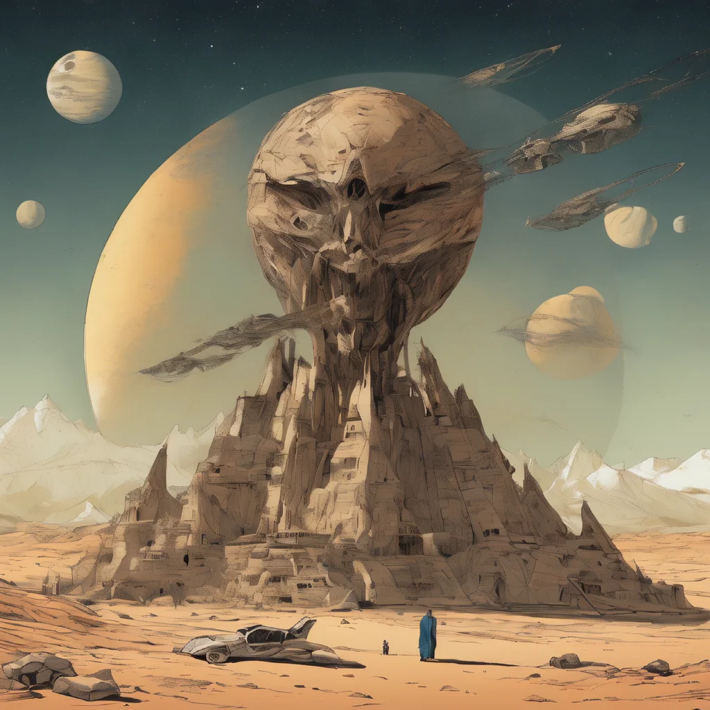
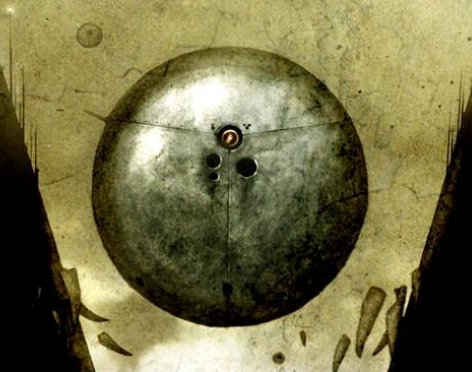
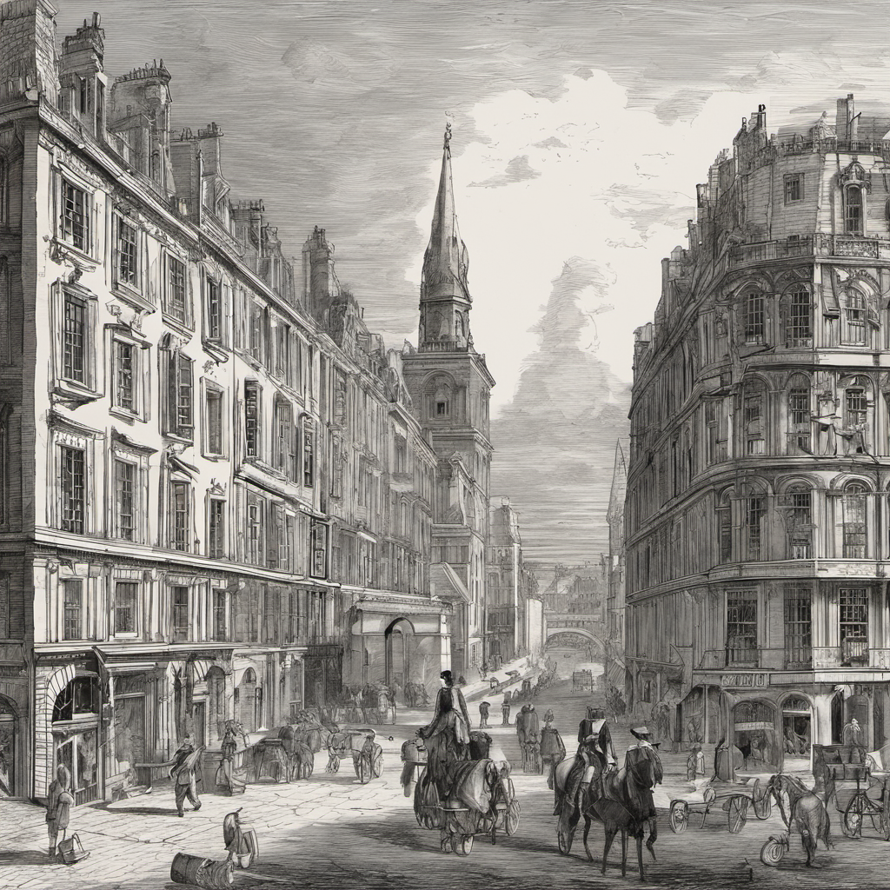

1. To Kill a Mockingbird by Harper Lee
The book had a natural flow to it, and I found myself easily immersed in its world. For some reason, I kept imagining abandoned civil quarters near my house whenever the street was described—it gave the story a somewhat spooky vibe. There were moments I almost believed the book was veering into supernatural territory. Plot-wise, it was an okay read for me, but what made it special was the timing. I read it during a trip to Kharagpur with my friends, and now the book is forever tied to those memories. Funny how books can become intertwined with chapters in our lives. #tif
2. No Longer Human by Osamu Dazai
This book delves into existentialism and the theme of human rejection, which I found intriguing. The protagonist’s struggles with identity and societal expectations were poignant, and there were moments where the narrative truly resonated with me (not in a suicidal maniac way but in ways I find irrelevant to this blog). However, I couldn’t help but feel a little disappointed. The book didn’t quite live up to the hype for me—it felt somewhat shallow, and I was left wanting more depth. While it’s a worthwhile read, it didn’t leave as strong an impression as I had hoped.
3. Why We Sleep: The New Science of Sleep and Dreams by Matthew Walker
This book was a fascinating dive into the science of sleep, and it scared the living daylights (get it??) out of me—in a good way. It made me value good sleep in a way I never had before. While the book is packed with information, it’s presented in a way that’s accessible and engaging. After reading it, I found myself rethinking my daily habits and prioritizing sleep more than ever. And more often than not I found myself dozing off while reading; which in my opinion is a good thing.
4. Dune by Frank Herbert
This book was an absolute masterpiece. The world-building is unparalleled—Herbert meticulously constructs the ecology, culture, religion, and politics of Arrakis, making it feel alive. What struck me most was how detailed yet natural everything felt. The science, the societal norms, and even the religious undertones were woven together seamlessly. One of the most profound themes for me was the idea that being a prophet doesn’t make you a prophet; it’s the belief of others that grants you that role. This book was also a gift from someone special, which made the experience even more meaningful. It’s one of those rare books that I’d want my children to read someday. I can already tell this will be an all-time favorite.
5. The God of Small Things by Arundhati Roy
This book is way too special for me. It did a number on my brain chemistry and solidified my love for Indian literature. The imagery was so tangible—I had such vivid visions while reading it, as if I had been to all those places in a past life. It felt weird and unsettling in the best way possible. In fact, it’s the most unsettling book I’ve read in that regard. After Dune and Midnight’s Children, this is my third-best book of the year. Arundhati Roy’s poetic prose and her portrayal of Kerala are nothing short of breathtaking.
6. White Nights by Fyodor Dostoevsky
This book felt very shallow to me. Was it due to its brevity, a translation issue, or simply because the protagonist came across as straight-up creepy? Whatever the case, it didn’t leave a strong impact. For all the hype surrounding it, I found it to be an overhyped read that didn’t live up to Dostoevsky’s usual depth.
7. Terrific Trains by Tony Mitton
As someone who loves trains, I give this book a solid 5 stars! All praise for Mr. Sparrow for being such a terrific loco pilot!
8. Man's Search for Meaning by Viktor E. Frankl
An okay read for me. While the themes of suffering and purpose are profound, the book didn’t leave a strong impact.
9. Dopamine Detox by Thibaut Meurisse
I read self-help books mostly to remind myself what not to do. Nothing against the author, but this book reinforced my dislike for the genre. The toxic positivity and oversimplification of complex human behaviors were off-putting. Sure, excessive internet use isn’t great, but humans weren’t made solely for capitalistic productivity and maximizing shareholder value. The ‘do-this-to-get-that’ approach just doesn’t sit right with me.
10. The Birth of Tragedy by Friedrich Nietzsche
This book was a challenging yet rewarding read. I agreed with a lot of Nietzsche’s critiques, but I also disagreed with just as much. Perhaps the criticism was more profound than the text itself. It’s definitely not an easy read, with its constant references to Greek lore and Abrahamic metaphors—so be prepared for that. The book came full circle for me, but I’m still left wondering if art will truly save me. I’m giving 5 stars for the journey and analysis, but 1 star for the tangents and random rambling in the later essays. I still couldn’t wrap my head around some things, and I might revisit it when I’m 40+.
11. The Iliad by Homer
A timeless epic that showcases the vagueness of human emotion and the futility of war. Legends goes that when Picasso saw the cave paintings at Lascaux he is reported to have said “We have invented nothing”. I can only share the sentiment. Now hey, I do have my qualms with the book, but those uneasy inquiries itself are a testimony that the book stood the test of time.
 “For the first time in history, there were actual Gods”
12. All Tomorrows by Nemo Ramjet
Okay HOLY F*CK. I felt sick with a lump in my throat, goosebumps at the back of my head. I picked this up as cheap sci-fi, but DAMN. The story of humanity’s future isn’t just a tale—it’s a profound exploration. What happens to humanity doesn’t matter because, like every story, it was always temporary. The book is far more philosophical than I ever expected. Are we not a blip in existence? Our story may not have a coherent ending, but that doesn’t take away from its impact. This book overwhelmed me in the best way possible.
13. The Odyssey by Homer
While it’s a classic, I found The Odyssey less engaging than The Iliad. It felt like a rambling spin-off at times—just didn’t capture my interest. Now this could because while Illiad was a tale of dozen people and more; only so much can be said about a single poor Odysseus.
14. A Tale of Two Cities by Charles Dickens
A laborious and, at times, boring read. The ending felt like a bit of a deus ex machina, and it didn’t quite redeem the slow pacing.

15. Flowers for Algernon by Daniel Keyes
A heart-wrenching story that I won’t forget. The book felt like a sucker punch at moments with its real life parallels. I think I want to write here because I also do not want to forget about a mouse named Algernon and a boy who got smart
16. Misery by Stephen King
Looking back, it felt like a meh book, especially considering it’s supposed to be horror. It might be due to my unrestricted access to 4chan that has stunted my nerves. King’s ability to create tension is undeniable, but it just didn’t have the impact I expected.
17. Dracula by Bram Stoker
Decent read. Repetitive. Monotonous. Homoerotic in a way. Must have given 5 stars in 1924. Unfortunately I am 100 years into the future. Will not be reading this again.
18n19. On the Genealogy of Morals & Ecce Homo by Friedrich Nietzsche
Honestly, these two books took a lot of time for reasonably reasonable reasons. I’m still digesting them. They deserve an essay-length review rather than a brief summary. I have my notes, and might release them sometime in the future. Nietzsche’s critiques and self-reflection are both thought-provoking and challenging, but they require deeper contemplation. Requires tons of tangential reading. Might revisit this genre when I am a little unemployed.
20. Orbital by Samantha Harvey
Encrypted for cringe reasons. Good book
Omjf R ofx s tai, yznjj bsb ss jhru bfj kwybwnf rd lxqx—f gwuj-nf-jf-jtf ksyydn, lmj crfi dgd’v wjenegjj ogw f drxjyavw. St gczjw tjlyqw lgzqv lgrusaw, fsv rl gjujej f dnyjsv, awkjjnfhjv rf jawaq kzldjj hgwxqnuc. A mfv jjtzfm 150 krfdu utqdnuyntuw ytqb—fty uqaqiabz tswb, tzy jnsqnkcah ffm vjysrdji. Lqw gflcdj’x wwv bfk jdrtkc htjlru, qncn “Lmj Crfligv gk Mwjnjs.” Lqw fsljytsabl fsv yjtyspgsnkc jjfuqwi ff dfijjblfsvrfl, gmc tjkgaw ufjcasl ojqx, yzn ssyspgsnkc ntbwm lt wwcmws.
A nnjs ejvj f kqgwy exnnj skgzy ac tfhc rf 3wi ga 4lm ljjvj. Yzn gujfrfl qaww bfk, “Czjww fsx f oxjqi…” swv ymw oasfd bzty kqgbjv Nswyz ojtr kyshj, bdky fk rl btmuv qtgt xwte xjgnl. Blwffpwqd wwgzlz, R bzxl awfqaiwi yzjl ymw ysnslrfl N ejvj gslc ymww dttcb mshswfnqq barndjj yt lqw htnnj tk lqax ggxc! Tm, oqsy f tuwxxawy ny ab lt mguv ts lx lmfl lznqv-uapj oxfijj.